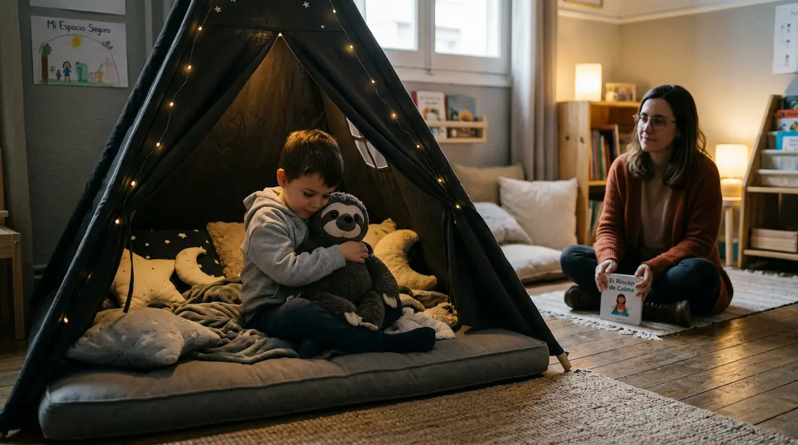

Acompañar las crisis sensoriales: más allá de una rabieta
Cuando un niño o niña en el espectro autista atraviesa un momento de colapso emocional, es habitual que desde fuera se confunda con una rabieta común. Sin embargo, existe una diferencia fundamental: mientras que una rabieta suele buscar la consecución de algo y cesa cuando se obtiene o cuando el menor comprueba que no funciona, una crisis por saturación sensorial o emocional (conocida como colapso o meltdown) es una respuesta involuntaria del sistema nervioso ante un exceso insoportable de estímulos.
El sistema nervioso al límite de su capacidad
Durante un colapso, el cerebro del menor se encuentra en un estado de alerta máxima y bloqueo. Los ruidos, las luces, las exigencias del entorno o la acumulación de cambios imprevistos han desbordado sus recursos de procesamiento. En ese instante, regañar, sermonear o imponer castigos no solo es inútil, sino que incrementa la angustia, ya que el niño ha perdido por completo el control de sus respuestas físicas y emocionales.
"Una crisis no es una mala conducta que requiera disciplina, sino una señal de auxilio de un sistema nervioso que necesita refugio, silencio y contención segura."
Claves prácticas para acompañar el colapso con serenidad
Gestionar de forma respetuosa estos episodios exige cambiar nuestra reacción instintiva y aplicar pautas de protección muy concretas:
1. Reducir drásticamente los estímulos: Apagar luces intensas, silenciar pantallas, apagar la música y apartar al menor de aglomeraciones o ruidos aporta el respiro que su sistema nervioso reclama urgentemente.
2. Ofrecer un espacio seguro sin exigencias: Mantener una presencia calmada, hablar en un tono muy suave o guardar silencio, evitando tocarle si el contacto físico le satura, transmite una profunda seguridad hasta que recupera el equilibrio.
Restaurando la calma y el vínculo de confianza
Una vez que el episodio remite y la tormenta neurosensorial se disipa, el cuerpo necesita tiempo para recuperarse del agotamiento extremo. Es el momento de ofrecer un abrazo tranquilo, agua y comprensión, sin reproches. Con un acompañamiento basado en la paciencia, el niño aprende que su hogar y sus adultos de referencia son un refugio inquebrantable ante cualquier dificultad.
➔ Volver al índice de Autismo (TEA)